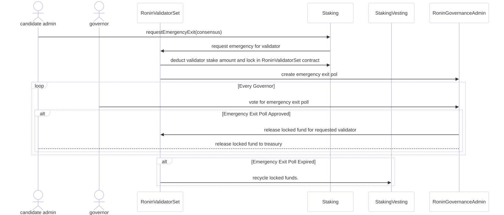
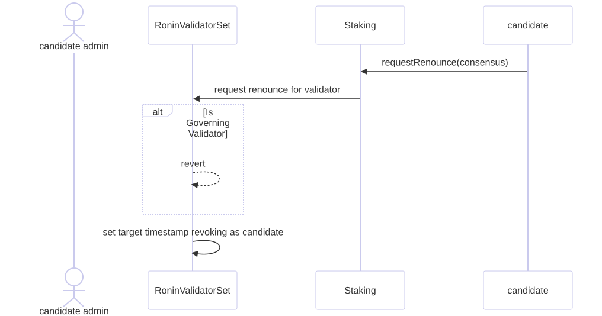

Profile
Key Highlights
Source of Truth for Validator Data
- The
Profilecontract serves as the centralized registry for all validator-related information, including consensus addresses, treasury accounts, admin details, and cryptographic keys. - It maintains the integrity and accuracy of validator data, ensuring reliable governance and staking operations.
Cross-Contract Interactions
- Integrates seamlessly with other Ronin contracts to facilitate dynamic updates:
- Staking Contract: Automatically updates profiles when a candidate applies for validator roles.
- RoninValidatorSet: Provides essential validator data for operations like consensus participation and governance voting.
- Changes to key profile attributes (e.g., consensus or public keys) trigger updates in dependent contracts to maintain consistency across the ecosystem.
Centralized Mapping for Data Integrity
- Uses a single mapping as the registry for all validator profile data.
- Ensures that critical data (e.g., public keys, VRF key hashes, consensus addresses) is unique across the network, preventing duplication and maintaining trust in the system.
Fast Finality Tracking
The FastFinalityTracking contract is responsible for tracking and scoring validator performance based on their participation in finalizing blocks. This mechanism ensures the reliability of validators by incentivizing active participation and maintaining a secure and efficient network.
Key Responsibilities
-
Tracking Finality Votes:
- Records votes submitted by validators for block finality.
- Keeps a count of finality votes (
qcVoteCount) for each validator in each epoch.
-
Scoring Validators:
- Assigns scores to validators based on the quality of their finality votes and their normalized stake values.
- Scores are calculated dynamically for each epoch to reflect validator performance accurately.
-
Normalizing Stake Data:
- Ensures fair scoring by normalizing staking amounts across all validators.
- Applies a pivot-based normalization to cap excessive stakes and balance scoring metrics.
-
Integration with Epochs and Periods:
- Operates on an epoch-based system to ensure timely and accurate tracking of validator actions.
- Normalized data is updated per period for consistent calculations.
Workflow
1. Recording Finality Votes
- The
recordFinalityfunction is called by the block producer (viablock.coinbase) once per block. - Validators who voted for block finality are recorded.
- Scores are updated for each validator based on:
- Their normalized stake.
- The total normalized stake of voters.
2. Normalization of Stake Values
- Stake values are normalized using the
inplaceFindNormalizedSumAndPivotfunction fromLibArray:- Excessively large stakes are capped to prevent unfair advantages.
- The normalized stake values are stored for future calculations.
3. Scoring Validators
- The scoring formula accounts for:
- Total stake of the validator (including self-stake and delegator stake amounts).
- The validator’s normalized stake.
- The total normalized stake of voters.
- The ratio of votes cast to the total possible votes.
- Scores reflect the contribution of each validator to the block finality process.
4. Epoch-Based Tracking
- Votes and scores are tracked for each epoch.
- The
epochOffunction from theRoninValidatorSetcontract is used to determine the current epoch based on the block number.
Data Structure
Tracking Records
_tracker:- Maps each epoch to a list of records for validators.
- Each record includes:
qcVoteCount: The number of finality votes cast by the validator.score: The cumulative score for the validator in the epoch.
Normalized Data
_normalizedData:- Stores normalized stake values for each validator in a period.
- Includes:
normalizedStake: A mapping of validator IDs to their normalized stake values.normalizedSum: The total normalized stake in the period.
Ronin Trusted Organization
Overview
The RoninTrustedOrganization contract is responsible for managing governor keys and weights for governing validators..
Core Logic
1. Trusted Organization Management
The contract provides RoninGovernanceAdmin with the ability to manage trusted organizations, which include:
- Consensus Address: Represents the operational node account.
- Governor Address: An externally owned account (EOA) used for voting on governance proposals.
- Weight: All governors are assigned the same weight for governance decisions, ensuring equal influence.
Management operations include:
- Create, Update, and Delete (CRUD) trusted organizations.
2. Quorum Thresholds
The contract sets a threshold for achieving quorum in governance decisions:
- Threshold Parameters:
- Numerator (
_num) and Denominator (_denom) are used to define the quorum percentage required for a decision to pass.
- Numerator (
3. Threshold Evaluation
To ensure governance decisions are valid, the contract evaluates votes against the quorum threshold:
- Minimum Vote Weight:
- Computes the minimum required vote weight to meet the quorum.
- Threshold Check:
- Validates whether the provided vote weight meets or exceeds the quorum percentage.
4. Data Integrity and Sanity Checks
The contract enforces strict data integrity for trusted organization management:
- Sanity Checks:
- Validates that weights are greater than zero.
- Ensures that the consensus address, governor address, and deprecated bridge voter address are unique.
- Duplicate Prevention:
- Prevent duplication of addresses in the organization mappings.
Maintenance
The Maintenance contract manages the scheduling, execution, and tracking of maintenance periods for validators in the Ronin network. It ensures that validators can temporarily exit block production without being slashed.
Key Responsibilities
-
Scheduling Maintenance:
- Validators can request maintenance schedules within defined time frames.
- Maintenance schedules are subject to duration, block offset, and maximum schedule constraints.
-
Exiting Maintenance:
- Validators can exit maintenance early, marking the end of their scheduled maintenance period.
- Exiting requires updating the maintenance state and ensuring synchronization.
-
Tracking Maintenance:
- Active maintenance schedules are tracked and synchronized to ensure accurate status updates.
- The contract maintains an up-to-date list of active maintenance schedules.
Workflow
1. Scheduling Maintenance
- A validator requests a maintenance schedule by specifying:
- Start and end blocks within allowed offsets.
- A duration within the defined minimum and maximum maintenance block ranges.
- The system verifies the following:
- Validator is eligible and is the caller’s candidate.
- The schedule adheres to constraints.
- No other active schedule exists for the validator.
2. Maintenance Execution
- Validators in maintenance are excluded from block production during their scheduled period.
- The state of maintenance is actively tracked using block ranges and synchronization checks.
3. Exiting Maintenance
- Validators can exit maintenance early by:
- Updating the end block to the current block.
- Synchronizing the maintenance schedule to remove the validator from active lists.
4. Synchronization of Active Schedules
- At each synchronization point:
- The system checks if scheduled maintenance has ended for any validator.
- Validators with expired schedules are removed from the active schedule list.
Integration
The Maintenance contract integrates with the RoninValidatorSet to ensure:
- Validation of maintenance eligibility.
- Removal of validators under maintenance from block production.
Ronin Random Beacon
The RoninRandomBeacon contract is responsible for generating secure random beacons, managing validator thresholds, and ensuring fair validator selection.
Overview
1. Random Beacon Management
- Handles the lifecycle of random beacon requests, including:
- Requesting a random seed for the next period.
- Validating and finalizing the random seed with cryptographic proofs.
- Storing the finalized beacon value for validator selection.
2. Validator Threshold Management
- Maintains and updates thresholds for different validator types:
- Governing Validators.
- Standard Validators.
- Rotating Validators.
Validator Selection: Filtering Valid Candidates
The RoninRandomBeacon contract ensures that only eligible candidates are included in the validator set. The filtering process applies the following criteria:
-
Exclude Newly Registered Candidates:
- Candidates within the cooldown period are excluded from selection.
- Ensures fairness by preventing immediate participation of new candidates.
-
Enforce Thresholds:
- Valid candidates are filtered based on thresholds defined for each validator type:
- Governing Validators (GV)
- Standard Validators (SV)
- Rotating Validators (RV)
- Valid candidates are filtered based on thresholds defined for each validator type:
-
Sort by Weights and Staking Amounts and Random Seed:
- Governing Validators (GV) are given priority based on their trusted weights and sorted based on their staking amounts.
- Standard Validators (SV) are sorted based on their staking amounts.
- Rotating Validators (RV) are selected based on a random seed.
4. Unavailability Management
- Tracks validator unavailability and enforces slashing penalties when thresholds are exceeded.
Flow
1. Random Seed Request
- At the beginning of a new period, the
RoninValidatorSetcontract requests a random seed. - Validators submit cryptographic proofs to fulfill the request.
2. Random Beacon Finalization
- At the end of the period:
- The random beacon is finalized using the submitted proofs.
- Pending validator IDs are finalized for the next period.
3. Validator Selection
- Finalized random beacon values are used to select validators for the current period and epoch.
- Selected validators are used for promoting to block producer.
4. Unavailability Tracking and Slashing
- Validator activity is monitored throughout the period.
- Validators failing to meet availability thresholds are penalized via slashing.
5. Transition to New Period
- At the end of the each epoch, the contract transitions to a new period with updated validator sets and configurations.
Staking Vesting
Purpose
The StakingVesting contract manages staking rewards, including block producer bonuses and fast finality rewards. It is designed to handle dynamic reward mechanisms, supporting seamless upgrades and integration with REP-10 for enhanced reward distribution.
Core Logic
Reward Distribution
The contract allocates rewards for block producers and implements a fast finality reward mechanism. Fast finality rewards incentivize validators to contribute to consensus, enhancing network stability.
- Rewards are credited per block, calculated based on the configured bonus amounts for each block produced.
- The contract ensures rewards are sent only once per block to prevent duplicate distributions.
REP-10 Integration
REP-10 introduces an upgraded reward mechanism for fast finality incentives. Its activation must occur at the start of a new period to ensure accurate reward distribution and consistency.
- Activation Process:
- The contract tracks the predefined activation period (
_rep10ActivationPeriod). - REP-10 is activated at the start of the first period that meets or exceeds this threshold.
- The contract tracks the predefined activation period (
- Legacy Reward Percentage:
- Until REP-10 is activated, the contract uses the legacy fast finality reward percentage.
- This ensures that rewards for the current period are distributed correctly under the pre-REP-10 configuration.
- Transition:
- Upon activation, the reward percentage is updated to the REP-10 value (
_fastFinalityRewardPercentageREP10), replacing the legacy percentage.
- Upon activation, the reward percentage is updated to the REP-10 value (
Bonus Transfer Mechanism
The contract handles reward transfers securely and ensures uninterrupted operations even under constrained conditions.
- Bonus transfers are executed for block producers only when sufficient balance is available.
- If the contract lacks funds, the transfer fails gracefully without reverting the transaction, avoiding disruptions to the network.
Upgrade and Configuration
The contract supports phased upgrades to introduce new features and refine reward mechanisms. Each initialization phase builds upon the previous configurations:
- Initial Setup:
- Configures block producer bonuses and validator contract addresses.
- REP-10 Activation:
- Adds dynamic updates for fast finality rewards, enabling more granular control.
- Backward Compatibility:
- Retains legacy configurations until new features are activated, ensuring smooth transitions.
Ronin BaseFee Treasury
Overview
The RoninBaseFeeTreasury contract serves as a treasury for collecting and managing base fees from EIP1559 transactions.
Core Logic
1. Receiving Funds
When an EIP-1559 transaction occurs, the Ronin node directs the base fee to this treasury contract.
- Base Fee Source: The base fee from EIP-1559 transactions is automatically credited to the contract’s balance by the underlying node logic.
2. Managing Balances
The contract holds the collected base fees securely, ensuring that the Ether remains within the contract balance until explicitly withdrawn through RoninGovernanceAdmin voting process.
- The balance of the contract reflects the cumulative base fees collected from network transactions.
3. Integration with Node Logic
The Ronin node interacts directly with this contract as part of the EIP-1559 fee mechanism:
- Node Behavior: Upon processing a transaction, the node routes the base fee to the
RoninBaseFeeTreasury. - Automatic Updates: The contract balance is updated dynamically based on incoming base fees from node-managed transactions.
Purpose
- Base Fee Treasury: Acts as a dedicated repository for EIP-1559 base fees, ensuring the funds are securely stored and managed.
Slash Indicator
Overview
The Slash Indicator system enforces validator accountability by applying penalties for misbehavior or failure to meet network responsibilities. These penalties include slashing RON, jailing validators, and reducing rewards. Additionally, the system uses a Credit Score mechanism to incentivize good behavior and allow recovery from penalties. The system ensures network security and reliability by deterring harmful activities and encouraging validators to adhere to protocol rules.
Credit Score System
Overview
The Credit Score incentivizes validators to maintain high performance and provides a mechanism to bail out from penalties like jailing. This scoring system promotes fairness by allowing recovery while ensuring consistent participation in the network.
Core Logic
1. Credit Score Management
-
Earning Credit:
- Validators earn scores based on their performance in each period, excluding jailed or maintenance periods.
- Scores are capped at a configurable maximum (
_maxCreditScore).
-
Resetting Credit:
- Scores can be reset by the system for specific validators when they are kicked-out when insufficient self-stake amount, renounced or emergency exit met revoking timestamp.
2. Bailout Mechanism
-
Eligibility:
- Validators can use credit scores to bail out of jailing if they:
- Have sufficient scores to cover the cost (
jailedEpochLeft * _bailOutCostMultiplier). - Have not bailed out previously during the same period.
- Have sufficient scores to cover the cost (
- Validators can use credit scores to bail out of jailing if they:
-
Bailout Execution:
- Once bailed out, the credit score is deducted by the cost of
jailedEpochLeft * _bailOutCostMultiplierand the validator is unjailed and allowed to resume operations. - No further penalties apply, as rewards are already reduced at the point of slashing.
- Once bailed out, the credit score is deducted by the cost of
Integration
- RoninValidatorSet:
- Executes jailing, bailout, and unavailability indicator resets.
- Maintenance Contract:
- Tracks maintenance periods, affecting credit score calculations.
Slash Unavailability
Overview
The Slash Unavailability penalizes validators for failing to participate in block production.
Core Logic
-
Unavailability Tracking:
- If a block producer fails to produce blocks during their assigned round and a lower-priority block producer steps in to produce them, the assigned block producer can be subject to slashing.
- Prevents redundant slashes within the same block.
-
Slashing Tiers:
- Tier 1: Loss of rewards for mining reward for exceeding the first threshold.
- Tier 2: Loss of rewards for mining reward and deducting self-stake and temporary jailing but allowing bail out.
- Tier 3: Severe penalties if bail-outed once in the current period, loss of mining rewards, deducting self-stake and jailed and cannot bail out.
-
Penalty Execution:
- Enforced via the
RoninValidatorSetcontract. - Includes RON deduction, jailing, and progressive penalties.
- Enforced via the
Configuration
- Thresholds, slashing amounts, and jail durations are dynamically configurable via
setUnavailabilitySlashingConfigs.
Slash Double Sign
Overview
The Slash Double Sign module addresses validators signing multiple blocks at the same height, which compromises consensus.
Core Logic
-
Governance Voting:
- Requires evidence validation and approval by governing validators before penalties are applied.
-
Penalties:
- Slashing of RON and jailing until a specified block.
- No bailout is allowed for double-signing violations.
Key Features
- Governance Oversight:
- Ensures penalties are applied only after governing validator approval.
- Replay Protection:
- Prevents duplicate slashing for the same evidence.
Slash Fast Finality
Overview
The Slash Fast Finality penalizes validators who sign for finality on conflicting headers at the same height.
Core Logic
- Detection:
- Validates evidence of conflicting finality signatures using cryptographic verification.
- Penalties:
- Includes RON slashing and jailing until a specific block.
- Bailout is disallowed for fast finality violations.
Slash Random Beacon
Overview
The Slash Random Beacon module ensures validators fulfill their duty to submit random beacon values.
Core Logic
- Responsibility:
- Validators must submit beacon values during specific periods.
- Penalties:
- RON slashing for non-compliance.
- No jailing, and bailout is allowed.
Comparisons Between Slash Types
| Feature | Unavailability | Double Sign | Fast Finality | Random Beacon |
|---|---|---|---|---|
| Penalty | Slashing, jailing | Slashing, jailing | Slashing, jailing | Slashing |
| Trigger | Missed blocks | Double-sign evidence | Conflicting finality signatures | Missing random beacon submissions |
| Authorization | Block Producer | Governance Voting | Governor | System transaction |
| Bailout | Allowed Tier 2, Not allowed Tier 3 | Not allowed | Not allowed | Not required |
| Jailing | Yes (Tier 2/3) | Yes | Yes | No |
Conclusion
The Slash Indicator system, coupled with the Credit Score module, provides a robust framework for maintaining validator accountability and network security. The combination of slashing, jailing, and scoring mechanisms ensures validators act responsibly while offering a path to recovery for occasional lapses in performance.
Staking Documentation
Overview
The Staking module manages the network’s core participation mechanism, allowing both validator candidates and delegators to stake RON, earn rewards, and contribute to the network’s security and governance. This module includes distinct functionalities for Candidate Staking and Delegator Staking, each tailored to different roles within the ecosystem.
Summary of Features
- Candidate Staking: Facilitates validator candidates to stake RON, apply for validator roles, and manage their staking pools.
- Delegator Staking: Enables participants to delegate RON to validators, withdraw or transfer stakes, and claim rewards.
Candidate Staking
Overview
The CandidateStaking module allows individuals to apply as validators, stake RON, and manage their staking pools. It governs the minimum requirements and operational guidelines for candidates aiming to become validators.
Core Features
-
Validator Application:
- Candidates must stake the minimum required amount and submit public keys, proof of possession, and commission rates.
- Prevents admins of active pools from becoming candidates.
-
Staking and Unstaking:
- Candidates can increase their stake to maintain their status.
- Unstaking requires adherence to minimum thresholds and cooldown periods.
-
Commission Rate Management:
- Allows candidates to set and adjust commission rates for delegators within configurable admin-defined limits.
-
Pool Deprecation:
- Handles the transition when a candidate exits, redistributing unclaimed rewards and returning stakes to the admin.
-
Emergency Exit and Renunciation:
- Enables candidates to renounce their validator roles or perform emergency exits to cease operations.
Workflow
- Application: Candidates register using
applyValidatorCandidate, providing necessary details and staking the required amount. - Staking: Candidates call
staketo increase their pool’s total stake. - Unstaking: Candidates use
unstaketo withdraw funds, observing cooldown and minimum stake requirements. - Commission Management: Candidates can request commission rate updates using
requestUpdateCommissionRate. - Deprecation: Exiting candidates transfer stake and rewards to their admin via pool deprecation mechanisms.
Configuration
- Staking Requirements:
- Admins configure minimum staking amounts via
setMinValidatorStakingAmount.
- Admins configure minimum staking amounts via
- Commission Rates:
- Admin-defined limits control fairness and flexibility.
Delegator Staking
Overview
The DelegatorStaking module allows network participants to stake RON with validators, supporting the network while earning rewards. Delegators actively participate in governance and network security by contributing to validator pools.
Core Features
-
Delegation:
- Delegators stake RON with active validator pools to support the network.
- Their stake contributes to the validator’s total staking amount, influencing their network role.
-
Undelegation:
- Delegators can withdraw their stake, subject to cooldown periods and pool status.
-
Redelegation:
- RON can be transferred between pools without unstaking, enabling flexibility in delegator support.
-
Reward Claiming:
- Rewards earned by delegators are based on their stake and the pool’s reward allocation.
-
Reward Delegation:
- Delegators can reinvest their earned rewards directly into another pool.
Workflow
- Delegation: Delegators call
delegateto stake RON with a validator. - Undelegation: Delegators call
undelegateto withdraw their stake after passing validation checks. - Redelegation: Delegators call
redelegateto transfer their stake between pools. - Reward Claiming: Rewards are claimed using
claimRewards. - Reward Delegation: Delegators call
delegateRewardsto reinvest their rewards into another pool.
Configuration
- Cooldown Periods:
- Admin-defined cooldown periods regulate staking, undelegation, and redelegation actions.
Summary of Key Features
| Feature | Candidate Staking | Delegator Staking |
|---|---|---|
| Role | Validator Candidates | Network Participants |
| Staking | Minimum required self-stake | Delegated RON with no minimum |
| Unstaking | Cooldown periods, minimum balance enforced | Cooldown periods for undelegation |
| Rewards | Receive rewards based on pool activity | Earn proportional rewards from validator pools |
| Additional Functions | Commission rate management, emergency exits | Reward redelegation, flexible pool switching |
Integration
- RoninValidatorSet: Coordinates validator operations, including candidacy approval and commission rate updates.
- Profile Contract: Registers candidate profiles with cryptographic details.
- BaseStaking: Manages core staking balances and interactions for both candidates and delegators.
Epoch vs Period
Understanding the distinction between Epoch and Period is critical for grasping the underlying mechanics of the system. Both terms are used to represent time intervals but serve different purposes and are calculated differently.
1. What is an Epoch?
An epoch is a fixed time unit measured in blocks. It represents the core timing mechanism for operations within the blockchain.
- Definition:
- An epoch is defined as a set number of blocks.
- Configuration:
- In this system, 1 epoch = 200 blocks.
- Approximate Duration:
- Each block takes approximately 3 seconds to generate.
- Thus, 1 epoch ≈ 10 minutes.
Example:
- Blocks 0–199 belong to epoch 0.
- Blocks 200–399 belong to epoch 1.
- Blocks 400–599 belong to epoch 2, and so on.
Epochs are used for:
- Validator rotation.
- Slashing mechanisms.
- Reward distribution calculations.
2. What is a Period?
A period is a broader time unit measured in timestamps, typically aligned with calendar days. It serves as a higher-level grouping of epochs.
- Definition:
- A period ideally starts at 00:00 UTC each day.
- Challenges in Blockchain:
- Blockchain works with block numbers, not timestamps, making it difficult to align perfectly with real-world time.
- Instead, the system determines a new period when the timestamp of the current epoch exceeds the next day’s threshold.
Key Notes:
- A period starts between 00:00 UTC → 00:15 UTC, depending on block generation timing.
- Period duration is variable and influenced by network performance.
3. Key Differences
| Feature | Epoch | Period |
|---|---|---|
| Measurement Unit | Number of blocks | Timestamps (real-world time) |
| Duration | Fixed (200 blocks ≈ 10 minutes) | Variable (aligned with calendar) |
| Purpose | Operational tasks (e.g., record stats, validator rotation) | High-level grouping of epochs (e.g., reward distribution, randomization, slashing) |
| Start Condition | Based on block number | Based on UTC timestamp |
4. Interplay Between Epochs and Periods
Periods are determined by epochs, and the transition is triggered as follows:
- At the end of each epoch, the system checks the timestamp of the last block.
- If the timestamp indicates a new calendar day, a new period begins.
- Validator roles, random beacons, and other operations are changed at the period boundary.
Key Implications:
- A period may contain fewer epochs if the network is slow (fewer blocks are produced per day).
- Epoch-based calculations remain deterministic, while period-based calculations adapt to timestamp variability.
5. Practical Example
Consider the following scenario:
- Block production rate: ~1 block per 3 seconds.
- Daily period duration: 24 hours = 86,400 seconds.
- Expected epochs per period: $$\approx (\frac{86,400}{(200 \times 3)} $$
6. Visual Representation
+--------+-----------------------------------------------+-------------------------------------------------------------+
| Period | 1 | 2 |
+========+=======+=========+=========+=====+=============+=============+=============+=============+=====+=============+
| Epoch | 0 | 1 | 2 | ... | 239 | 240 | 241 | 242 | | |
+--------+-------+---------+---------+-----+-------------+-------------+-------------+-------------+-----+-------------+
| Block | 0-199 | 200-399 | 400-599 | ... | 47800-47999 | 48000–48199 | 48200–48399 | 48400–48599 | ... | 95800–95999 |
+--------+-------+---------+---------+-----+-------------+-------------+-------------+-------------+-----+-------------+
In this table:
- Each period consists of multiple epochs.
- Each epoch is defined by a range of block numbers.
- A new period starts when the UTC timestamp exceeds 00:00 UTC.
Epoch vs Period
Understanding the distinction between Epoch and Period is critical for grasping the underlying mechanics of the system. Both terms are used to represent time intervals but serve different purposes and are calculated differently.
1. What is an Epoch?
An epoch is a fixed time unit measured in blocks. It represents the core timing mechanism for operations within the blockchain.
- Definition:
- An epoch is defined as a set number of blocks.
- Configuration:
- In this system, 1 epoch = 200 blocks.
- Approximate Duration:
- Each block takes approximately 3 seconds to generate.
- Thus, 1 epoch ≈ 10 minutes.
Example:
- Blocks 0–199 belong to epoch 0.
- Blocks 200–399 belong to epoch 1.
- Blocks 400–599 belong to epoch 2, and so on.
Epochs are used for:
- Validator rotation.
- Slashing mechanisms.
- Reward distribution calculations.
2. What is a Period?
A period is a broader time unit measured in timestamps, typically aligned with calendar days. It serves as a higher-level grouping of epochs.
- Definition:
- A period ideally starts at 00:00 UTC each day.
- Challenges in Blockchain:
- Blockchain works with block numbers, not timestamps, making it difficult to align perfectly with real-world time.
- Instead, the system determines a new period when the timestamp of the current epoch exceeds the next day’s threshold.
Key Notes:
- A period starts between 00:00 UTC → 00:15 UTC, depending on block generation timing.
- Period duration is variable and influenced by network performance.
3. Key Differences
| Feature | Epoch | Period |
|---|---|---|
| Measurement Unit | Number of blocks | Timestamps (real-world time) |
| Duration | Fixed (200 blocks ≈ 10 minutes) | Variable (aligned with calendar) |
| Purpose | Operational tasks (e.g., record stats, validator rotation) | High-level grouping of epochs (e.g., reward distribution, randomization, slashing) |
| Start Condition | Based on block number | Based on UTC timestamp |
4. Interplay Between Epochs and Periods
Periods are determined by epochs, and the transition is triggered as follows:
- At the end of each epoch, the system checks the timestamp of the last block.
- If the timestamp indicates a new calendar day, a new period begins.
- Validator roles, random beacons, and other operations are changed at the period boundary.
Key Implications:
- A period may contain fewer epochs if the network is slow (fewer blocks are produced per day).
- Epoch-based calculations remain deterministic, while period-based calculations adapt to timestamp variability.
5. Practical Example
Consider the following scenario:
- Block production rate: ~1 block per 3 seconds.
- Daily period duration: 24 hours = 86,400 seconds.
- Expected epochs per period: $$\approx (\frac{86,400}{(200 \times 3)} $$
6. Visual Representation
+--------+-----------------------------------------------+-------------------------------------------------------------+
| Period | 1 | 2 |
+========+=======+=========+=========+=====+=============+=============+=============+=============+=====+=============+
| Epoch | 0 | 1 | 2 | ... | 239 | 240 | 241 | 242 | | |
+--------+-------+---------+---------+-----+-------------+-------------+-------------+-------------+-----+-------------+
| Block | 0-199 | 200-399 | 400-599 | ... | 47800-47999 | 48000–48199 | 48200–48399 | 48400–48599 | ... | 95800–95999 |
+--------+-------+---------+---------+-----+-------------+-------------+-------------+-------------+-----+-------------+
In this table:
- Each period consists of multiple epochs.
- Each epoch is defined by a range of block numbers.
- A new period starts when the UTC timestamp exceeds 00:00 UTC.
Roles Explained
This document explains the key roles in the Delegated Proof of Stake (DPoS) system, with a focus on validators, their responsibilities, and the hierarchical structure within the Ronin network.
1. Candidate
Definition
- A candidate is an entity that applies to become a validator.
- Candidates must meet specific requirements, such as staking a minimum amount of tokens.
- Candidates hold specific data:
admin: The address used for rotating the consensus address and other information, identical to the treasury address.treasury: The address to receive rewards, identical to the admin address.governor: Used for voting on proposals; only governing validators have this information.commissionRate: The percentage of rewards the validator shares with their delegators.pubKeyHash: Hash of the public key used to vote for finality.vrfKeyHash: Hash of the VRF key used to submit random seeds; only governing validators have this information.
Responsibilities
- Maintain their staking balance to remain eligible for promotion.
- Await selection to join the validator set.
- Submit fast finality proofs to finalize blocks.
Process
- A user applies to become a candidate by calling the
applyValidatorCandidatefunction in the smart contract. - Eligible candidates may be promoted to validator status.
2. Validator
Definition
- A validator is a candidate that has been selected to participate in block production and governance of the network.
- Validators are divided into three types:
- Governing Validators (GV): Trusted entities with governance privileges.
- Standard Validators (SV): Selected based on their staking amounts.
- Rotating Validators (RV): Temporarily promoted validators selected randomly for fairness.
Types of Validators
1. Governing Validators (GV)
- Role: Act as core participants in network governance and block production.
- Selection: Chosen based on predefined trusted organization weights.
- Special Privileges:
- Submit VRF proofs to generate random seeds.
- Participate in voting for proposals and changes to network parameters.
- Maintain a public
vrfKeyHashandgovernoraddress for governance.
2. Standard Validators (SV)
- Role: Provide block production support with no governance privileges.
- Selection: Chosen based on staking amounts from the top-ranked candidates after governing validators.
- Special Privileges:
- Contribute to block production.
- Earn rewards from transaction fees and block rewards.
- Limitation: Excluded from voting on governance proposals.
3. Rotating Validators (RV)
- Role: Promote decentralization by allowing temporary participation.
- Selection:
- Randomly selected from the remaining candidates after GV and SV are assigned.
- Determined by the random seed generated during beacon finalization.
- Special Privileges:
- Participate in block production during assigned epochs.
- Limitation:
- Rotation occurs periodically; their validator status is not permanent.
Responsibilities of Validators
- Block Production:
- Validate and include transactions in blocks.
- Produce blocks during assigned epochs.
- Finality Proofs:
- All candidates, including non-block producers, contribute fast finality proofs to finalize blocks.
- Compliance:
- Maintain active participation to avoid penalties or slashing.
- Ensure sufficient staking to retain validator status.
3. Block Producer
Definition
- A block producer is a validator assigned to create blocks during a specific epoch.
Responsibilities
- Validate transactions and include them in new blocks.
Key Points
- Block producers are a subset of validators assigned to create blocks during specific epochs.
- All candidates (not just block producers) are responsible for submitting finality proofs.
4. Delegator
Definition
- A delegator is a token holder who stakes their tokens with a validator.
- Delegators share in validator rewards and indirectly influence governance by supporting specific validators.
Reward Sharing
- Rewards are distributed based on:
- Validator’s commission rate.
- Delegator’s staked amount.
5. Hierarchical Relationship
Structure
- Candidates: The initial pool of participants awaiting promotion.
- Validators:
- Governing Validators (GV): Trusted and responsible for governance and block production.
- Standard Validators (SV): Support block production without governance roles.
- Rotating Validators (RV): Temporarily promoted to encourage decentralization.
- Block Producers: A subset of validators responsible for creating blocks during specific epochs.
- Delegators: Stake tokens with validators to share in rewards and indirectly support the network.
Overview: Comparing Emergency Exit and Renounce Processes
Introduction
This document highlights the differences between the Emergency Exit and Renounce processes available to validators in the Ronin network. Both mechanisms allow validators to exit their roles, but they serve distinct purposes and workflows. Additionally, their impact on a validator’s block production role and candidate status varies significantly.
Key Differences
| Feature | Emergency Exit | Renounce |
|---|---|---|
| Purpose | For validators facing exceptional circumstances. | For validators voluntarily stepping down. |
| Eligibility | Available to all validators. | Restricted for governing validators. |
| Stake Handling | Stake is locked during the process and managed by governance. | Stake remains unaffected; role renunciation is scheduled. |
| Governance Voting | Requires governor approval through an emergency exit poll. | No governance voting required. |
| Impact on Block Production | Block producer role is disabled immediately after the next epoch. | Candidate continues to join validator selection process until the revocation timestamp. |
| Impact on Candidate List | Remains in candidate list until period ending of the revoking timestamp and eligible for rewards. | Same as renounce |
| Fund Recycling | Locked funds are recycled if the poll expires. | No recycling mechanism; funds remain intact. |
Emergency Exit Process
- Use Case: Designed for validators encountering unexpected issues, such as security threats, operational failures, or loss of private keys.
- Governance Role:
- Governors must vote on an emergency exit poll.
- Approval releases the validator’s locked stake; disapproval or expiration results in recycling the stake.
- Impact on Block Production:
- The validator is removed as a block producer starting from the next epoch.
- Ensures immediate mitigation of risks from compromised validators.
- Impact on Candidate Status:
- The validator remains in the candidate list util the period ending of revoking timestamp.
- Fund Management:
- Locked funds are securely managed in
RoninValidatorSet. - Upon poll expiration, locked funds are recycled into the
StakingVestingcontract.
- Locked funds are securely managed in
- Outcome:
- The validator is removed from block production and candidate list.
Renounce Process
- Use Case: Allows validators to voluntarily step down while maintaining network continuity.
- Governance Role:
- Non-governing validators can renounce freely.
- Governing validators cannot renounce due to their critical role in governance.
- Impact on Block Production:
- The candidate continues to join validator selection and responsibilities until the revocation timestamp is reached.
- Impact on Candidate Status:
- The validator remains fully eligible for rewards and voting until the revocation timestamp.
- Fund Management:
- No stake is locked or recycled during the process.
- Outcome:
- The validator exits the set after the revocation timestamp, allowing for controlled role handover.
Reward Calculation
Overview
The RewardCalculation module determines and distributes staking rewards for participants in the Ronin network. It ensures rewards are calculated accurately based on staking contributions and updates user balances dynamically as staking amounts change. The reward mechanism incentivizes long-term staking and aligns validator and delegator interests.
Core Logic
1. Reward Accumulation
-
Period-Based Rewards:
- Rewards are calculated and accrued on a per-period basis for each staking pool.
- The accumulated rewards per share (RPS) for a pool are updated at the end of each period.
-
Proportional Distribution:
- Rewards are distributed proportionally based on the staking amount.
- Stakers earn rewards relative to their share of the total pool.
2. User Reward Calculation
- Debited Rewards:
- Tracks rewards earned by each user (
debited) to prevent recalculation and ensure correctness.
- Tracks rewards earned by each user (
- New Rewards:
- New rewards are computed based on the difference in RPS since the last update and the user’s current staking amount.
- Fallback Mechanism:
- If RPS for a period is unavailable, the last known RPS value is used to estimate rewards.
3. Reward Syncing
- Dynamic Updates:
- User rewards are recalculated whenever staking amounts change or at the end of a period.
- Pool Shares Adjustment:
- Updates total pool shares to ensure consistent reward distribution.
4. Reward Claiming
- Users can claim their accumulated rewards, which are settled and reset for the next period.
- Claiming rewards triggers updates to the user’s reward state to prevent double claims.
Workflow
-
Reward Accumulation:
- Rewards for each staking pool are recorded at the end of every period.
- The RPS is recalculated based on the total staking amount in the pool and the rewards allocated.
-
Reward Syncing:
- User rewards are synced dynamically when their staking amount changes.
- The system ensures rewards reflect the latest RPS and staking contributions.
-
Reward Claiming:
- Users claim their rewards through a structured process:
- Outstanding rewards are calculated based on the user’s current staking amount and RPS.
- The rewards are transferred, and the user’s reward state is reset.
- Users claim their rewards through a structured process:
Key Features
- Accurate Proportional Rewards:
- Ensures rewards are distributed fairly based on individual contributions to the staking pool.
- Dynamic Updates:
- User rewards and pool shares are updated in real-time as staking amounts change.
Example: Reward Calculation Workflow
Scenario
- A staking pool (
Pool A) has the following participants at the beginning of Period 1:- User 1: Staked 1,000 RON.
- User 2: Staked 2,000 RON.
- The total reward allocated to
Pool Afor Period 1 is 300 RON.
Step-by-Step Calculation
-
Determine Total Staking Amount:
- Pool A Total Staking = 1,000 (User 1) + 2,000 (User 2) + 3,000 (Validator Self-Stake) = 6,000 RON.
-
Calculate Reward Per Share (RPS):
- Reward Per Share (RPS) = Total Reward / Total Staking = \( \frac{300 \times 10^{18}}{6,000 \times 10^{18}} \) = 0,05 per RON.
-
Accumulate User Rewards:
- User 1 Reward: \( 1,000 \times 0,05 = 50 \ RON \).
- User 2 Reward: \( 2,000 \times 0,05 = 100 \ RON \).
Reward Claiming
- User 1 Claims Reward:
- The system calculates User 1’s Reward for Period 1:
- Reward: 50 RON.
- Reward Transferred: 50 RON.
- User 1’s Reward Balance is reset to 0.
- The system calculates User 1’s Reward for Period 1:
Period Transition
-
New Stakes at Period 2:
- User 1: Adds 500 RON (Total: 1,500 RON).
- User 2: Withdraws 1,000 RON (Total: 1,000 RON).
-
Record Period 2 Rewards:
- Pool A Total Staking: 1,500 (User 1) + 1,000 (User 2) + 3,000 (Validator Self-Stake) = 5,500 RON.
- New Reward Allocation: 500 RON.
- New Reward Per Share (RPS):
\( \frac{500 \times 10^{18}}{5,500^{18}} = 0,09 \) per RON.
-
Calculate Updated Rewards:
- User 1 Reward for Period 2:
\( 0 + 500 \times 0,09 = 45 \ \text{RON} \). - User 2 Reward for Period 2:
\( 100 + 1000 \times 0,09 = 190 \ \text{RON} \).
- User 1 Reward for Period 2:
Summary of Rewards
| Period | User | Staked Tokens | Reward Per Share (RPS) | Reward Earned (RON) |
|---|---|---|---|---|
| 1 | U1 | 1,000 | 0.05 | 50 |
| 1 | U2 | 2,000 | 0.05 | 100 |
| 2 | U1 | 1,500 | 0.09 | 95 |
| 2 | U2 | 1,000 | 0.09 | 90 |
Fast Finality Tracking Score
The FastFinalityTracking score system is designed to evaluate and reward validators based on their contributions to achieving block finality in the Ronin network. This specification focuses on the methodology, particularly the normalization technique used to ensure fair scoring, as well as the implications for validator performance.
Objectives
- Measure and reward validators for their contributions to block finality.
- Normalize staking data to balance scoring and prevent dominance by validators with excessively high stakes.
- Ensure a secure, efficient, and fair system for validators.
Components
1. Normalization Technique
The normalization process adjusts validators’ stake values to meet specific criteria:
- Maintain relative differences between stake values.
- Cap excessive stakes to ensure fairness.
- Use a pivot-based algorithm to determine the threshold for capping stake values.
Algorithm Overview
Given:
- An array of stake values \( a \): Descending-sorted stakes of validators.
- The sum of stakes \( s \): \( s = \text{sum}(a) \).
- The divisor \( d \): Maximum number of validators.
- An initial pivot \( k \): \( k = s / d \).
Normalization Goals:
- Adjust stake values such that all \( a[i] \leq k \).
- Maintain the relative order of \( a \) after adjustment.
- Recalculate \( k \) iteratively based on the remaining values.
Process:
- Initialize \( k = s / d \).
- Iterate through the array \( a \):
- Replace \( a[i] > k \) with \( k \).
- Recalculate \( s \) and \( k \) using only unchanged values.
- Repeat until \( k \) stabilizes and all \( a[i] \leq k \).
Example:
- Input:
- \( a = [100, 70, 20, 15, 3] \)
- \( d = 3 \)
- Calculation:
- Step 1: \( k = \text{sum}(a) / d = 208 / 3 = 69.3 \).
- Step 2: Adjust \( a \) to \( [69, 69, 20, 15, 3] \), recalculate \( k = 177 / 3 = 59 \).
- Step 3: Adjust \( a \) to \( [59, 59, 20, 15, 3] \), \( k \) stabilizes at 59.
Output:
- Normalized stakes: \( [59, 59, 20, 15, 3] \).
- Normalized sum: \( 114 \).
2. Tracking Finality Votes
- A record of votes is maintained for each validator in every epoch.
- Votes are tracked in
_tracker, which maps epochs to validators and their voting activity.
3. Finality Score Calculation
Formula
For a validator \( v \) in epoch \( e \): $$ \text{score}_{v, e} = \frac{\text{normalizedStake}_v}{\text{totalVoterStake}} \times \frac{\text{totalVoterStake}^2}{\text{normalizedSum}^2} $$
Where:
- \( \text{normalizedStake}_v \): Normalized stake of validator \( v \).
- \( \text{totalVoterStake} \): Sum of normalized stakes of all voters in the epoch.
- \( \text{normalizedSum} \): Total normalized stake across all validators.
Data Structure
Normalized Data
_normalizedData:- Stores normalized stake values for validators in a period.
- Includes:
normalizedStake: A mapping of validator IDs to their normalized stake values.normalizedSum: The total normalized stake across validators.
Tracking Records
_tracker:- Maps each epoch to validator performance.
- Records:
qcVoteCount: Number of finality votes cast by the validator.score: Cumulative score of the validator in the epoch.
Implications of Normalization
-
Fair Competition:
- Caps excessive stakes to prevent validators with high stakes from dominating the network.
- Ensures smaller validators can compete fairly in scoring.
-
Dynamic Adjustments:
- Normalized values are recalculated for every new period.
- Reflects changes in staking data and validator activity.
-
Efficient Scoring:
- The iterative pivot-based normalization ensures an efficient and balanced scoring system.
Summary
The FastFinalityTracking contract ensures fairness and incentivizes validator participation by combining a robust normalization technique with dynamic score calculations. By capping excessive stakes and rewarding active participation, it strengthens the Ronin network’s security and efficiency.
Fast Finality Tracking Score
The FastFinalityTracking score system is designed to evaluate and reward validators based on their contributions to achieving block finality in the Ronin network. This specification focuses on the methodology, particularly the normalization technique used to ensure fair scoring, as well as the implications for validator performance.
Objectives
- Measure and reward validators for their contributions to block finality.
- Normalize staking data to balance scoring and prevent dominance by validators with excessively high stakes.
- Ensure a secure, efficient, and fair system for validators.
Components
1. Normalization Technique
The normalization process adjusts validators’ stake values to meet specific criteria:
- Maintain relative differences between stake values.
- Cap excessive stakes to ensure fairness.
- Use a pivot-based algorithm to determine the threshold for capping stake values.
Algorithm Overview
Given:
- An array of stake values \( a \): Descending-sorted stakes of validators.
- The sum of stakes \( s \): \( s = \text{sum}(a) \).
- The divisor \( d \): Maximum number of validators.
- An initial pivot \( k \): \( k = s / d \).
Normalization Goals:
- Adjust stake values such that all \( a[i] \leq k \).
- Maintain the relative order of \( a \) after adjustment.
- Recalculate \( k \) iteratively based on the remaining values.
Process:
- Initialize \( k = s / d \).
- Iterate through the array \( a \):
- Replace \( a[i] > k \) with \( k \).
- Recalculate \( s \) and \( k \) using only unchanged values.
- Repeat until \( k \) stabilizes and all \( a[i] \leq k \).
Example:
- Input:
- \( a = [100, 70, 20, 15, 3] \)
- \( d = 3 \)
- Calculation:
- Step 1: \( k = \text{sum}(a) / d = 208 / 3 = 69.3 \).
- Step 2: Adjust \( a \) to \( [69, 69, 20, 15, 3] \), recalculate \( k = 177 / 3 = 59 \).
- Step 3: Adjust \( a \) to \( [59, 59, 20, 15, 3] \), \( k \) stabilizes at 59.
Output:
- Normalized stakes: \( [59, 59, 20, 15, 3] \).
- Normalized sum: \( 114 \).
2. Tracking Finality Votes
- A record of votes is maintained for each validator in every epoch.
- Votes are tracked in
_tracker, which maps epochs to validators and their voting activity.
3. Finality Score Calculation
Formula
For a validator \( v \) in epoch \( e \): $$ \text{score}_{v, e} = \frac{\text{normalizedStake}_v}{\text{totalVoterStake}} \times \frac{\text{totalVoterStake}^2}{\text{normalizedSum}^2} $$
Where:
- \( \text{normalizedStake}_v \): Normalized stake of validator \( v \).
- \( \text{totalVoterStake} \): Sum of normalized stakes of all voters in the epoch.
- \( \text{normalizedSum} \): Total normalized stake across all validators.
Data Structure
Normalized Data
_normalizedData:- Stores normalized stake values for validators in a period.
- Includes:
normalizedStake: A mapping of validator IDs to their normalized stake values.normalizedSum: The total normalized stake across validators.
Tracking Records
_tracker:- Maps each epoch to validator performance.
- Records:
qcVoteCount: Number of finality votes cast by the validator.score: Cumulative score of the validator in the epoch.
Implications of Normalization
-
Fair Competition:
- Caps excessive stakes to prevent validators with high stakes from dominating the network.
- Ensures smaller validators can compete fairly in scoring.
-
Dynamic Adjustments:
- Normalized values are recalculated for every new period.
- Reflects changes in staking data and validator activity.
-
Efficient Scoring:
- The iterative pivot-based normalization ensures an efficient and balanced scoring system.
Summary
The FastFinalityTracking contract ensures fairness and incentivizes validator participation by combining a robust normalization technique with dynamic score calculations. By capping excessive stakes and rewarding active participation, it strengthens the Ronin network’s security and efficiency.
Weighted Random Selection Specification for Validators
This document outlines the detailed specification for selecting validators in the Ronin Network using the LibSortValidatorsByBeacon library and the RoninRandomBeacon contract. The selection process ensures a fair, decentralized, and efficient mechanism for determining the validator set for each period and epoch.
Overview
The validator selection process is divided into two phases:
- Sorting and Saving Validators (Period Level): Filtering and categorizing validators into governance, standard, and rotating types, based on trusted weights and staking amounts.
- Random Selection of Rotating Validators (Epoch Level): Using the beacon value generated by the
RoninRandomBeaconcontract to select rotating validators dynamically for each epoch.
Inputs and Parameters
General Inputs
- Candidates (
cids): List of validator candidate IDs. - Trusted Weights (
trustedWeights): Weights assigned to validators based on governance criteria. Weights are the same for all governing validators. - Staking Amounts (
stakedAmounts): Total staked RON for each candidate. - Beacon Value (
beacon): A pseudo-random number generated at the period level, used for rotating validator selection. - Epoch Number (
epoch): The epoch within the period for which rotating validators are being selected.
Configuration Parameters
- Number of Governance Validators (
nGV): Maximum number of governance validators. - Number of Standard Validators (
nSV): Maximum number of standard validators. - Number of Rotating Validators (
nRV): Maximum number of rotating validators.
Phase 1: Sorting and Saving Validators (Period Level)
Steps
-
Input Validation:
- Ensure
cids,trustedWeights, andstakedAmountsarrays have the same length. - Check that the total number of validators does not exceed the sum of
nGV,nSV, andnRV. - If the number of all candidates \( \leq \sum(nGV, nSV, nRV) \), take all candidates as validators.
- Ensure
-
Filter Governance Validators:
- Use
trustedWeightsto filter out validators with non-zero governance weights. - Select the top
nGVvalidators based on staking amounts. - Mark these validators as selected.
- Use
-
Filter Standard Validators:
- From the remaining candidates, select the top
nSVvalidators based on staking amounts. - Include any unused governance slots to the standard validator count (
nSV += nGV - actual_gv_count). - Mark these validators as selected.
- From the remaining candidates, select the top
-
Filter Rotating Validators:
- From the remaining candidates, select up to
nRVvalidators. - Use beacon randomness and staking amounts for weighted selection.
Edge-case: If number of actual governing validators \( \geq nGV \), unused governance slots are in random selection process.
- From the remaining candidates, select up to
-
Save Validators:
- Save governance and standard validators as non-rotating.
- Save rotating validators with their stakes for beacon-based selection in Phase 2.
Outputs
- Non-Rotating Validators: Combined list of governance and standard validators.
- Rotating Validators: List of rotating validators and their stakes.
Phase 2: Rotating Validator Selection (Epoch Level)
Steps
-
Input Preparation:
- Retrieve the list of rotating validators and their stakes from Phase 1.
- Ensure the number of rotating validators does not exceed
nRV.
-
Beacon-Based Weight Calculation:
- Formula:
- denote the address of candidate \( i \) as \( \text{cid}_i \).
- denote the stake amount of candidate \( i \) of period \( p \) as \( \text{s}_{ip} \).
- denote the random beacon of period \( p \) as \( \text{r}_p \).
- denote the weight of a candidate \( i \) at epoch \(e \) in period \(p \) as \( w_{iep} \)
\[ w_{iep} = \frac{\text{s}_{ip}}{1e18}^2 \times \texttt{h}(e, \text{cid}_i, \text{r}_p) \]
where \( \texttt{h} \) is hash of concatenating \( e \), \( \text{cid}_i \) and \( \text{r}_p \)
- Formula:
-
Top-k Selection:
- Sort the rotating validators by their calculated beacon weights.
- Select the top
nRVvalidators for the current epoch.
-
Combine Validator Sets:
- Merge the selected rotating validators with the non-rotating validators.
Outputs
- Epoch Validator Set: Final list of validators (rotating + non-rotating) for the epoch.
Examples and Visualization
Consider threshold values for the number of governance, standard, and rotating validators:
nGV = 2nSV = 2nRV = 2
Period Level Sorting Example
| Candidate ID | Trusted Weight | Staked Amount (RON) | Governance Validator (GV) | Standard Validator (SV) | Rotating Validator (RV) |
|---|---|---|---|---|---|
| Validator A | 100 | 50,000 | ✔ | ||
| Validator B | 100 | 40,000 | ✔ | ||
| Validator C | 100 | 30,000 | ✔ | ||
| Validator D | 0 | 25,000 | ✔ | ||
| Validator E | 0 | 20,000 | ✔ | ||
| Validator F | 0 | 15,000 | ✔ | ||
| Validator G | 0 | 14,000 | ✔ | ||
| Validator H | 0 | 13,000 | ✔ |
Summary:
- Governance Validators (GV): Validator A, Validator B
- Standard Validators (SV): Validator D, Validator E
- Rotating Validators (RV) List: Validator C, Validator F, Validator G, Validator H
Epoch Level Rotating Validator Selection Example
| Rotating Validator | Staked Amount (RON) | Beacon Hash | Weight |
|---|---|---|---|
| Validator C | 30,000 | 0x1234 | 8,500 |
| Validator G | 15,000 | 0x5678 | 5,100 |
| Validator F | 14,000 | 0x9abc | 5,625 |
| Validator H | 13,000 | 0x9def | 2,500 |
Selected Rotating Validators for Epoch
- Validator C (Weight:
8,500) - Validator G (Weight:
5,625)
Block Based Operations

1. Finality Tracking
- Block Producer records voter data in
FastFinalityTracking. - If no snapshot exists for the period:
FastFinalityTrackingtakes a staking snapshot viaStakingand normalizes data.- Voter scores are accumulated for the epoch based on snapshot data.
2. Slashing Mechanism
- Block Producer reports unavailable validators to
SlashIndicator. - Verification:
- Validator’s block producer status (
RoninValidatorSet). - Validator’s maintenance status (
Maintenance).
- Validator’s block producer status (
- Actions:
- Record missed blocks for eligible validators.
- Executes slashing when thresholds are met via
RoninValidatorSet.
3. Reward Distribution
- Block Producer submits block fees to
RoninValidatorSet. - Reward Flow:
- Bonus rewards for block production are requested via
StakingVesting. - Rewards are distributed between validators and delegators based on the commission rate.
- Bonus rewards for block production are requested via
Key Insights
- Efficiency: Tracks finality, distributes rewards, and enforces penalties consistently.
- Accountability: Maintains validator performance through slashing.
- Incentives: Encourages participation with bonus and commission-based rewards.
Emergency Exit

Overview
The emergency exit process allows all candidates to withdraw their stake under exceptional circumstances. It involves governance approval and ensures the integrity of the network through a structured workflow.
1. Emergency Exit Request
- Actor: Candidate Admin
- Process:
- Request Initiation:
- The candidate admin submits a
requestEmergencyExit(consensus)call to theStakingcontract.
- The candidate admin submits a
- Stake Locking:
Stakingforwards the emergency request toRoninValidatorSet.RoninValidatorSetdeducts the validator’s stake and locks it in its contract.
- Poll Creation:
RoninValidatorSetsubmits a request toRoninGovernanceAdminto create an emergency exit poll.
- Request Initiation:
2. Governance Voting
- Actor: Governors
- Process:
- Governors vote on the emergency exit poll created by
RoninGovernanceAdmin.
- Governors vote on the emergency exit poll created by
Outcomes
- Poll Approved:
- Actions:
RoninGovernanceAdmininstructsRoninValidatorSetto release the locked funds for the validator.- Locked funds are returned to the candidate admin’s treasury.
- Actions:
- Poll Expired:
- Actions:
- Expired polls result in the locked funds being recycled into the
StakingVestingcontract.
- Expired polls result in the locked funds being recycled into the
- Actions:
Notice
- Validators who initiate an emergency exit are no longer eligible for block production.
- However, they remain on the candidate list until the epoch ending of the revoking timestamp.
Renouncing as a Validator

Overview
The renounce process allows non governing validators to voluntarily step down from their role. This action is initiated by the candidate admin and processed through the Staking and RoninValidatorSet contracts. Governing validators are restricted from renouncing their role.
1. Renounce Request
- Actor: Candidate Admin
- Process:
- The candidate admin submits a
requestRenounce(consensus)call to theStakingcontract. Stakingforwards the renounce request to theRoninValidatorSet.
- The candidate admin submits a
2. Governance Restriction
- Condition: If the validator is a Governing Validator, the
RoninValidatorSetwill reject the renounce request and revert the transaction.
3. Renunciation Process
- Condition: For non-governing validators, the renounce request proceeds.
- Actions:
RoninValidatorSetschedules a revoking timestamp.- The validator remains in their role until the target timestamp is reached.
Notice
- Validators in the renounce process are still eligible for block production and rewards until their role is officially revoked at the target timestamp.
- Once revoked, they are removed from the candidate list and can no longer participate in block production.
- On renunciation, the validator’s can still be slashed for any missed blocks or malicious behavior.
Block Based Operations
1. Finality Tracking
- Block Producer records voter data in
FastFinalityTracking. - If no snapshot exists for the period:
FastFinalityTrackingtakes a staking snapshot viaStakingand normalizes data.- Voter scores are accumulated for the epoch based on snapshot data.
2. Slashing Mechanism
- Block Producer reports unavailable validators to
SlashIndicator. - Verification:
- Validator’s block producer status (
RoninValidatorSet). - Validator’s maintenance status (
Maintenance).
- Validator’s block producer status (
- Actions:
- Record missed blocks for eligible validators.
- Executes slashing when thresholds are met via
RoninValidatorSet.
3. Reward Distribution
- Block Producer submits block fees to
RoninValidatorSet. - Reward Flow:
- Bonus rewards for block production are requested via
StakingVesting. - Rewards are distributed between validators and delegators based on the commission rate.
- Bonus rewards for block production are requested via
Key Insights
- Efficiency: Tracks finality, distributes rewards, and enforces penalties consistently.
- Accountability: Maintains validator performance through slashing.
- Incentives: Encourages participation with bonus and commission-based rewards.
Epoch Based Operations

1. Finality Tracking
- Block Producer records voter data in
FastFinalityTracking. - If no snapshot exists for the period:
FastFinalityTrackingtakes a staking snapshot viaStakingand normalizes data.- Voter scores are accumulated for the epoch based on snapshot data.
2. Slashing Mechanism
- Block Producer reports block missing validator to
SlashIndicator. - Verification:
- Validator’s block producer status (
RoninValidatorSet). - Validator’s maintenance status (
Maintenance).
- Validator’s block producer status (
- Actions:
- Logs missed blocks for eligible validators.
- Executes slashing when thresholds are met via
RoninValidatorSet.
3. Reward Distribution
- Block Producer submits block fees to
RoninValidatorSet. - Reward Flow:
- Bonus rewards for block production are requested via
StakingVesting. - Rewards are distributed between validators and delegators based on the commission rate.
- Bonus rewards for block production are requested via
Key Insights
- Efficiency: Tracks finality, distributes rewards, and enforces penalties consistently.
- Accountability: Maintains validator performance through slashing.
- Incentives: Encourages participation with bonus and commission-based rewards.